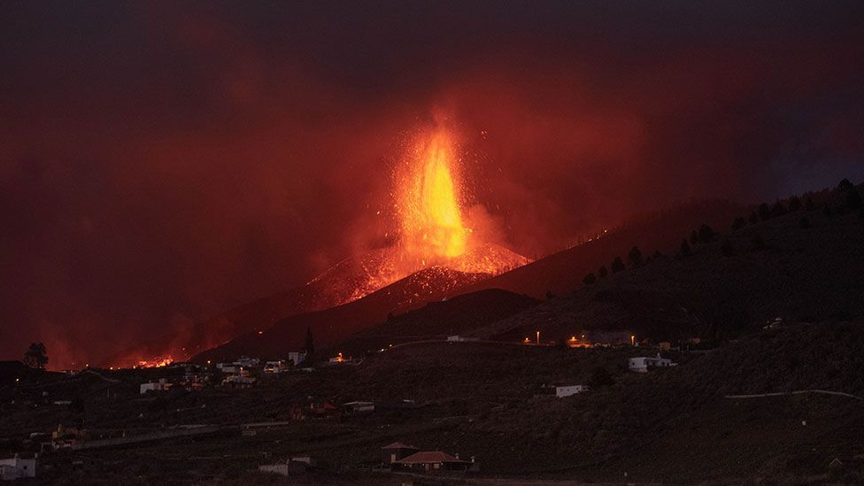

https://www.bbc.com/news/world-europe-58681233 thew news and images are taken from BBC news
A1 Lava has been flowing, the crack throwing lava and ash people have been evacuated, La Palma is known the scene showed the lava. Many have lost everything
fire from the mountain tava
fire from the mountain
A2 Lava has been flowing down the mountain, the crack in the Cumbre Vieja volcano throwing lava and ash More than 6,000 people have been evacuated, including 400 tourists La Palma is known for not being as "touristy” Images from the scene showed the lava engulfing communities, Many have lost everything
B1 Lava has been flowing down the mountain and through villages, the crack in the Cumbre Vieja volcano throwing lava and ash. More than 6,000 people have been evacuated, including 400 tourists La Palma is known for not being as "touristy” Images from the scene showed the lava engulfing communities, Many have lost everything
B2 Lava has been flowing down the mountain and through villages, since the crack opened in the Cumbre Vieja volcano throwing jets and ash into the air. More than 6,000 people have been evacuated, including 400 tourists who have been taken La Palma is known for not being as "touristy” as some of its neighbours. Images from the scene showed the lava engulfing communities, but sparing some buildings Many have lost everything
C1 Lava has been flowing down the mountain and through villages, since the crack opened in the Cumbre Vieja volcano throwing jets of lava and ash into the air. More than 6,000 people have been evacuated, including 400 tourists who have been taken to the neighbouring island La Palma, the most western and smallest of the Canary Islands, is known for not being as "touristy” as some of its neighbours. Images from the scene showed the lava engulfing communities, but sparing some buildings Many have lost everything
C2 Lava has been flowing down the mountain and through villages since the crack opened in the Cumbre Vieja volcano on 19 September, throwing jets of lava and ash into the air. More than 6,000 people have been evacuated, including 400 tourists who have been taken to the neighbouring island of Tenerife. La Palma, one of the most western and smallest of the Canary Islands, is known for not being as "touristy" as some of its neighbours. Images from the scene showed the lava - molten rock which turns black when exposed to the air - engulfing communities, but sparing some buildings. Many have lost everything they own